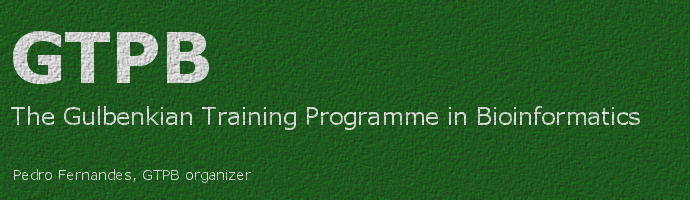

|
 |
|
ARANGS13 Automated and reproducible analysis of NGS dataCourse Timetable (provisional) |
| PW12 | Automated and reproducible analysis of NGS data |
| Mon, Oct 21st |
Day #1
|
| 09:30 - 10:30 |
Course methodology. Self-introductions. Automated and reproducible analysis of NGS data: Introductory lecture |
| 10:30 - 11:00 | Coffee Break |
| 11:00 - 12:30 | NGS data, file formats (hands-on, looking at FASTQ and SAM files) |
| 12:30 - 14:00 | Lunch Break |
| 14:00 - 16:00 | The UNIX command line, Vagrant,
Virtualization, Configuration Management |
| 16:00 - 16:30 | Tea Break |
| 16:30 - 18:00 | Running analysis steps on the command line: FASTQ quality control |
| Tue, Oct 22nd |
Day #2
|
| 09:30 - 10:30 | Wrap-up session about Day 1 Command line scripting (shell) to reproduce reference alignment with BWA and calculation of consensus sequences with SamTools. |
| 10:30 - 11:00 | Coffee Break |
| 11:00 - 12:30 | Programming toolkits (i.e. scripting with objects) to develop tailor-made analyses, e.g. parameterized filtering of FASTQ, using the SamTools API to analyze DNA fragmentation. |
| 12:30 - 14:00 | Lunch Break |
| 14:00 - 16:00 | How to organize genomics projects (i.e. data and scripts) in a
standard way that simplifies collaboration. |
| 16:00 - 16:30 | Tea Break |
| 16:30 - 18:00 | Tracking project versions using distributed version control systems |
| Wed, Oct 23rd |
Day #3
|
| 09:30 - 10:30 |
Wrap-up session about Day 2 Downstream analysis: handling annotated genomes |
| 10:30 - 11:00 | Coffee Break |
| 11:00 - 12:30 | The GFF3 file format, about coordinate systems |
| 12:30 - 14:00 | Lunch Break |
| 14:00 - 16:00 | Linking annotations with sequences |
| 16:00 - 16:30 | Tea Break |
| 16:30 - 18:00 | Linking sequences with annotations |
| Thu, Oct 24th |
Day #4
|
| 09:30 - 10:30 |
Wrap-up session about Day 3 Visual environments for workflows (galaxy) |
| 10:30 - 11:00 | Coffee Break |
| 11:00 - 12:30 | Data sharing, reproducibility, open data |
| 12:30 - 14:00 | Lunch Break |
| 14:00 - 16:00 | Running existing workflows in Galaxy |
| 16:00 - 16:30 | Tea Break |
| 16:30 - 18:00 | Final wrap-up session Development of a Galaxy tool. |
| Course Homepage |
|
Instituto Gulbenkian de Ciência, Apartado 14, 2781-901 Oeiras, Portugal Last updated: Oct 1st 2013 |